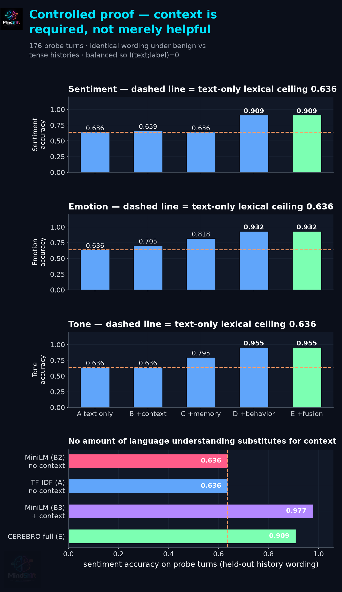
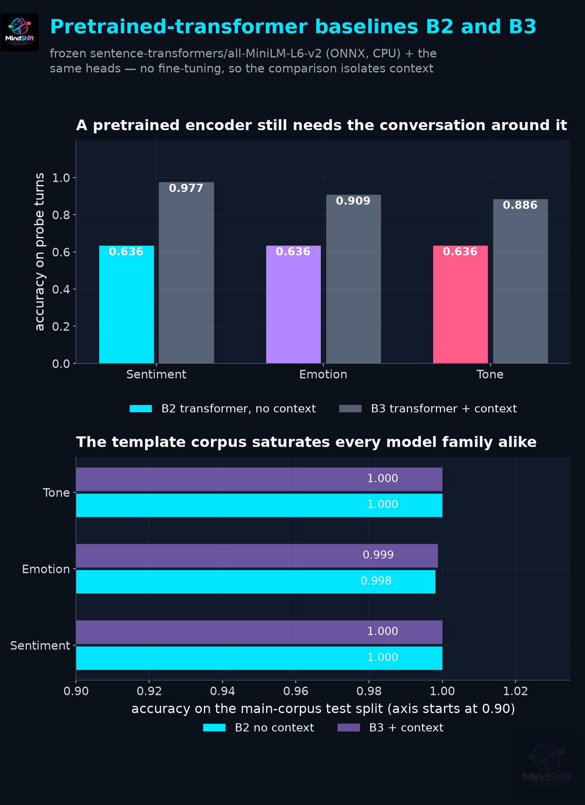
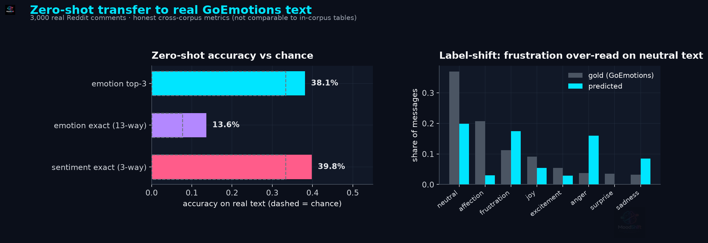

A single message is ambiguous by construction. The same
string can mean opposite things, and only the conversation tells you which.
“Fine.”
relieved · neutral · cold · passive-aggressive
73%
of probe utterances flip sentiment with history
10,956
messages analysed in the published corpus
4
platforms parsed natively
2 · Why the obvious approach fails
Message-level analysis misses the conversation
We measured it rather than asserting it. On a controlled probe
set where the wording is identical and only the history differs, every
context-free reader collapses to the same score — the majority-class rate.
0.636
text-only ceiling (analytic)
0.636
TF-IDF text-only
0.636
frozen MiniLM transformer, no context
The design balances every utterance across its gold labels, so
the mutual information between the words and the label is zero. A pretrained
encoder buys nothing here: it is bounded by the same ceiling.
3 · Our solution
CEREBRO
A context-aware, temporal conversation-intelligence engine.
It does not ask what is the sentiment of this message. It asks
what is happening to the emotional state of this conversation, where did it
change, and what accompanied the change.
0.909
probe accuracy with context
+27.3 pp
over the text-only ceiling
p = 0e+00
exact McNemar vs text-only
95% bootstrap CI on the paired gain:
[0.210, 0.347] accuracy.
Context, memory, behaviour — and a proof they are used

The component ladder on held-out history wording. Text-only sits exactly on the lexical ceiling; the full stack reaches 0.909 sentiment / 0.932 emotion / 0.955 tone.
6 · Evaluation design
Baselines: lexical, and a real pretrained transformer

B2 is a frozen sentence-transformers MiniLM encoder — a strong, general-purpose language model with no fine-tuning, exactly as §9 asks. Bottom: the template corpus saturates every model family alike, which is why the probe experiment is the informative one.
7 · Results
Every number measured, every claim bounded
Head
Metric
Value
Sentiment
probe accuracy (unseen wording)
0.909
Emotion
probe accuracy (unseen wording)
0.932
Tone
probe accuracy (unseen wording)
0.955
Sarcasm
ROC-AUC (held-out test)
0.9486
Irony
ROC-AUC
0.9289
Passive aggression
ROC-AUC
0.9386
Tension
MAE / R²
3.205 / 0.975
Calibration
top-1 ECE (sentiment / emotion / tone)
0.006 / 0.017 / 0.019
In-corpus scores saturate because the corpus is template-generated
(62 distinct phrasings over 10,956 messages). We
publish that rather than headlining it, and report real-text transfer separately.
8 · Transfer
Real human text is the honest test

Zero-shot on GoEmotions, then the same heads fine-tuned on real Reddit text — emotion exact 0.136 → 0.446, top-3 → 0.753.
9 · Engineering
Explainable, robust, fast
176
probe turns in the controlled experiment
88
messages / second, single CPU core
8.9 MB
peak memory, 1,000-message chat
184 ms
API round-trip, 50 messages
0.92
min annotator κ across heads
20/20
robustness scenarios passed
Data-leakage audit: 0 conversation
overlap across splits, 0 label-leakage findings; the
62 recurring templates are disclosed, not hidden.
Every prediction ships with confidence and a human-readable explanation that
separates detected evidence from inferred interpretation.
10 · Applications & future
Where this goes
Applications
Customer-support escalation early-warning
Team-communication and workplace analytics
Community moderation triage
Conversation research at scale
Next
Multilingual parsing and lexicons
Multi-turn real conversation corpora
Streaming / real-time analysis
Human multi-annotator agreement study
“Decode the shift. Understand the conversation.”
CEREBRO reports model-detected emotional and tone signals,
not a person's true feelings. Turning points are statistical associations, not
causal claims.